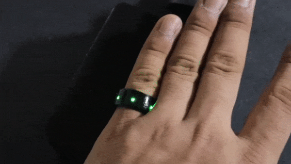
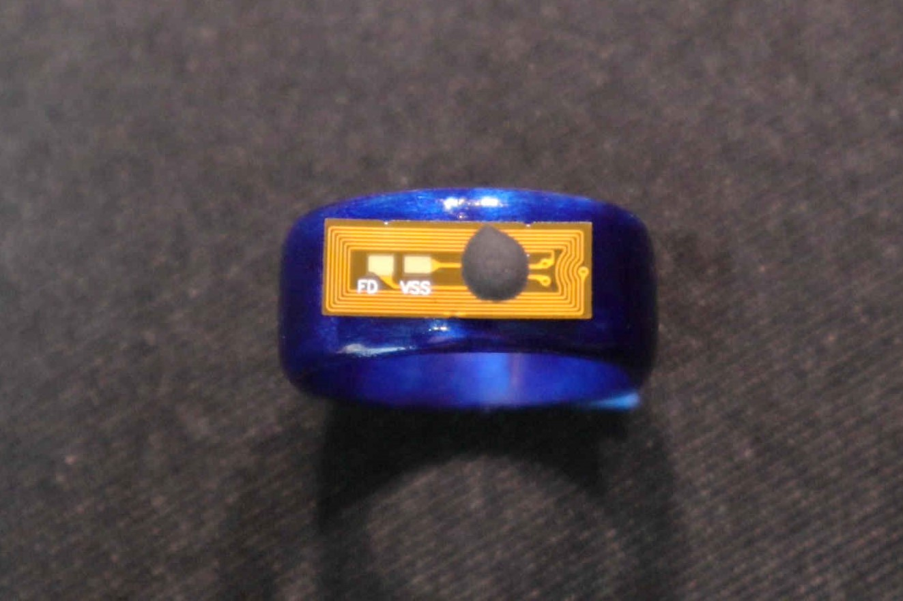
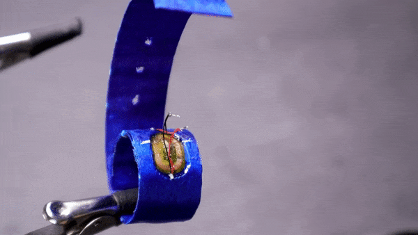
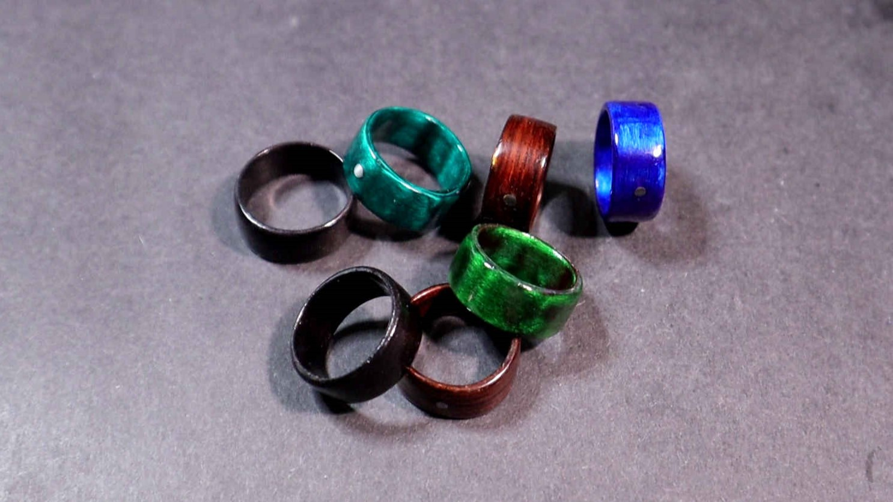

NFC Light Up Rings

This project is the continuation of the Motorcycle Keyless Ignition System and now it is the time to create the NFC rings. These rings not only serve as keys but also have a built-in light-up feature. Please watch the video tutorial below, and also you can find the part list document here.
The process consists of rolling thin veneer sheets to create the rings and then carefully carving a slot in the layers to insert the NFC tag. To add an extra level of complexity, we can incorporate an NFC LED tag and solder two additional tiny SMD LEDs to make the ring light up when it comes into proximity with the reader.


This project offers ample room for creativity, as the possibilities for altering the color, texture, and even the shape of the ring can be combined to generate countless designs. At this point, it becomes more of an art project, showcasing the incredible potential when art and engineering work together.
